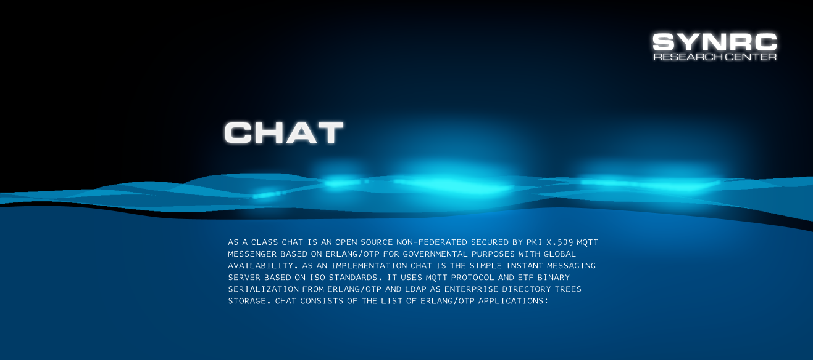
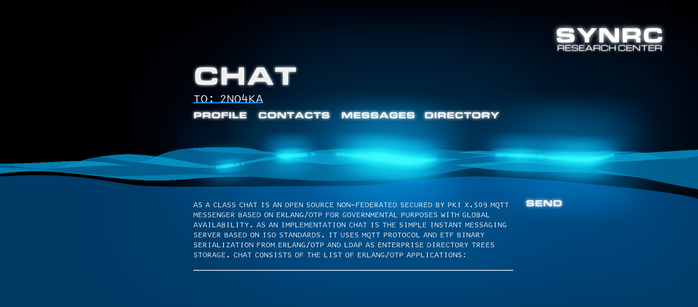

БРОШУРА
Рекламний презентаційний проспект продукту з поверхнею води:

Слайд презентації виконаний в техніці муар:

Титульний слайд брошури:

Використані шрифти: IBM Selectra Manifold, Michroma, Eurostyle, Kyiv Machine.
˙
ПРИНЦИПИ

Компанія користується наступними принципами:
Акредитовані Центр Сертифікації Ключів. ЧАТ має власний X.509 центр видачі сертифікатів з використанням еліптичної криптографії ECC [CA] SECP384R1 SHA384.
Кожен раз при реєстрації нового користувача генерується PKCS-10 X.409 запит на створення сертифікату. Це також може бути зроблено за допомогою
консольної утіліти.
Ієрархічні домени. ЧАТ має власний DNS сервер [NS] з підтримкою DNSSEC.
Структура використаних сервісів та їх імена записані зберігаються в DNS сервері;
Директорія підприємства як розподілена база. В складних розподілених ієрархія підпорядкування
з двома видами адміністраторів (безпеки і операційний) підтримка крос-DMZ реплікації регулюється глобальними правилами
системи для авторизації пошукових LDAP запитів. Топ-левел LDAP сервери вибирають адміністраторів безпеки LDAP серверів друго рівня, і т.д.;
Всі повідомлення шифруются завжди. Кожне повідомлення шифрується за допомогою моделей полів Галуа GF(2^m) GCM або з
використанням еліптичних кривих та їх модулярних форм CCM, які зберігаються в X.509 конфертах як JKS. Нешифровані месаджі заборонені в системі.
Повідомлення не зберігаються на сервері. Транзієнта оперативна черга доставки повідомлень MQTT,
сертифіковані сервери: [MQ]: Mosquitto через TLSv1.3 та EMQX через QUIC (HTTP/3).
Кожне повідомлення після останнього кроку отримання квитанції про доставку кореспондентом знищується на сервері
і залишається відтепер тільки на клієнті. Так працювали перші версії Viber;
Не збираєм метадані. Месенжер не зберігає ніяких метаданих, як то локація, IP адреса,
інформація про апаратуру клієнта, тощо. ЧАТ використовує тільки наступні внутрішнін ідетифікатори: client,
device, profile, roster виключно для роутінга повідомлень. Користувач також має змогу обрати зберігати
контактну книгу (ростер) не на сервері, а на клієнті;
Ростер на клієнті. Вся контактна інформація про ваші підписки, чати, канали, та компанії
може зберігатися ексклюзивно на клієнті. Після логіна на іншому присторії користовач має змогу отримати (по MQTT)
контактну книгу (ростер) з іншого клієнта, який працює на іншому пристрої;
Ростер на сервері. Вся контактна інформація про ваші підписки, чати, канали та компанії
зберігається в корпоративній LDAP дерикторії яка має багато каналів реплікації;
Багато контактних книг. Для ведення подвійного та багааватарного життя на платній основі
та для корпоративних акаунтів клієнт підтримує мульті-ростерність та верифікує акаунти за допомогою
phone та mail способів верифікації клієнта;
Відкритий код. Імплементація Erlang SSL пережила heartblead тому була
вибрана як основа безпеки TLS з'єднань в архітектурі ЧАТ. Всі серверні субкомпоненти системи написані
на Erlang та доступні для верифікації та ліцензування публічно. Єдиний і повний автор усіх компонент
системи який здійснює свою політику згідно BDFL собору є Максим Сохацький.
БІЗНЕС

Форми співробітництва:
— Автономні впровадження на ВАШИХ потужностях;
— Хостинг сервісу по підписці на НАШИХ потужностях;
— Багато-ростерні конфігурації по підписці;
— Інтеграційне API SDK для партнерських програм;
— Конфігурація під потреби бізнесу.
˙
СУСПІЛЬСТВО

Зроблено для людей:
— Інтегровані системи масового оповіщення;
— B2C сервісні канали для бізнесу і ОВВ;
— Календар iCal та Контакт vCard органайзер;
— Референсний iOS UI дизайн, додаток без залежностей;
— Відкритий консольний клієнт;
— Державний або корпоративний ДСТУ 4145 логін.
˙
ПРОТОКОЛ
Технічна специфікація протоколу:
Поняття протоколу:
Топіки. ЧАТ протокол використовує наступні MQTT топіки, перелік яких зберігається на клієнті:
1) actions/:client; 2) events/:client; 3) devices/:phone; 4) contacts/:roster; 5) private/:roster/:roster; 6) room/:room.
Записи. По цим топікам передаються наступні Erlang записи (records):
Index, Typing, Search, Feature, Service,
Presence, Friend, Tag, Link, Message, Member,
Room, Contact, Star, Ack, Auth,
Roster, Profile, History, push, io закодовані ETF серіалізатором.
Модулі. Протокол ЧАТ реалізований у наборі модулів-підпротоколів: ФАЙЛ, ІСТОРІЯ, ПОСИЛАННЯ, ПОВІДОМЛЕННЯ,
ПРИСУТНІСТЬ, ПРОФІЛЬ, PUSH, КІМНАТА, РЕСТЕР, ПОШУК, АУТ. Щоб отримати повну специфікацію,
перейдіть до папки priv/proto. Реалізація сервера CHAT покладається лише на підключення ISO/IETF,
такі як DNSSEC, X.509 CSR, LDAP, QUIC, WebSocket, MQTT.
Додатки. ЧАТ — це простий сервер обміну миттєвими повідомленнями на основі стандартів ISO.
Він використовує протокол MQTT і бінарну серіалізацію ETF від Erlang/OTP у різних своїх додатках:
MQTT, LDAP, DNS, CA. Безпечний за замовчуванням. Додаток ЧАТ має функцію підпису/підтвердження,
шифрування/розшифрування, увімкнену для кожного окремого переданого повідомлення.
Доставлені повідомлення видаляються з MQTT сервера після підтвердження отримки одержувачем.
Це заміна Keybase, OTR, PGP (називайте як хочете) для безпечних комунікацій, визначених X.509 ASN.1.
Ключі. Ключі які використовують користувачі складаються з трьох типів-пар (можна більше, але типів всього три):
1) Перша пара ключів SECP384R1 забезпечує безпеку каналу TLS 1.3 засобами еліптичної криптографії власного АЦСК/CA;
2) Друга пара ключів ED25519 забезпечує безпеку повідомлень;
3) Третя пара ключів забезпечує доступ до державних та юридичних сервісів ДСТУ-4145.
Кожен учасник системи перед комунікацією здійснює реанонс своїх публічних частин цих асиметричних ключів.
Протоколи обміну ключами. Для створення спільного секретного слова, яким можна було би
шифрувати трафік за допомогою симетричного шифру використовується математичний протокол обміну публічними ключами
і його обчислення на сторонах кореспондентів комунікації. Нище наведені параметри
протоколів обміну ключами ED25519, SECP384r1, SECP571r1,
ДСТУ-ГАЛУА які використовуються в месенжері.
roccoK := privat(32)
roccoP := public(roccoK)
tonpaK := privat(32)
tonpaP := public(tonpaK)
tonpaS := shared(tonpaK,roccoP)
roccoS := shared(roccoK,tonpaP)
roccoS == tonpaS
Схема ED-25519 поліноміальної репрезентації Монтгомері B⋅y²=x³+A⋅x²+x () і редукційного
многочлена x²⁵⁵-19 з порядком циклічної групи — 2^252 + 27742317777372353535851937790883648493,
А=486662, B=1.
Схема SECP-384r1 поліноміальної репрезентації y²+y⋅x=x³+A⋅x+B і редукційного многочлена x³⁸⁴+x¹²⁸+x⁹⁶+x³²-1,
A=FF(9) 00(2) FFFFFFFC,
B=3312FA7E 23EE7E49 88E056BE 3F82D191
81D9C6EF E8141120 314088F5 013875AC
656398D8 A2ED19D2 A85C8EDD 3EC2AEF.
Схема SECP-571r1 поліноміальної репрезентації y²+y⋅x=x³+A⋅x+B і редукційного многочлена x⁵⁷¹+x¹⁰+x⁵+x²+1,
A=1,
B=02F40E7E 2221F295 DE297117 B7F3D62F
5C6A97FF CB8CEFF1 CD6BA8CE 4A9A18AD
84FFABBD 8EFA5933 2BE7AD67 56A66E29
4AFD185A 78FF12AA 520E4DE7 39BACA0C
7FFEFF7F 2955727A.
Схема ДСТУ-ГАЛУА-GF(2^431) поліноміальної репрезентації y²+y⋅x=x³+A⋅x+B і редукційного многочлена x⁴³¹+x⁵+x³+1,
A=1,
B=53FB7AF7 B4407000 A6F226AD 6BAD2837
8646BD83 F1F94081 0A4C1953 6EE65E53
F40F973F 2F06C5E8 0EFE3B43 651BD5FF
8B06BA5F 9299.
Симетричні блочні шифри. Тепер можна шифрувати симетричним
ключем (AES-GCM, AES-CCM, ДСТУ-КАЛИНА) по ізоморфному (roccoS==tonpaS) закритому токену:
на стороні Тонпа — :n2o.encrypt(msg,tonpaS) і на стороні
Рокко: :n2o.decrypt(msg,roccoS).
Геш-функції. Для перевірки підпису можуть використовуватися
наступні геші: ДСТУ-КУПИНА, SHA-2, POLY-1305, AES-CMAK.
Відкритість платформи. Єдиний додаток як в часи IRC та
XMPP забезпечує доступ до всіх серверів сумісних з CHAT X509. Таким чином клієнт
підримує довільну кількість ключів та довільну кількість серверів. І вся ця інформація зберігається
тільки на клієнті.
 Ю.І. Горбенко, І.Д. Горбенко. — Інфраструктури відкритих ключів. Електроний цифровий підпис. Теорія та практика.
Ю.І. Горбенко, І.Д. Горбенко. — Інфраструктури відкритих ключів. Електроний цифровий підпис. Теорія та практика.
ДСТУ 4145-2002 — Інформаційні технології. Криптографічний захист інформації.
Цифровий підпис, що ґрунтується на еліптичних кривих. Формування та перевірка.
SEC2 — Recommended EC Domain Parameters.
Eric Schorn — A Tour of Curve25519 in Erlang.
˙
iOS 13.0

Тут ви можете завантажити білд iOS клієнта написаного на Swift:
˙
X Windows

Простий X Windows клієнт доступний для запуску у WSL, BSD, Linux та Mac. Написаний на C.
ЧАТ клієнт X.ORG X.509 базується на наступних бібліотеках:
1) X Windows Toolkit (Xt),
2) X Windows Library (Xlib) and
3) OpenGL for X Windows (GLX 1.3). Завантаження:
CHAT-X509-GUI — X Windows клієнт (C99).
˙
POSIX

Тут ви можете завантажити консолький референсний клієнт CHAT-X509:
CHAT включає систему доставки текстових повідомлень на основі вбудованого брокера
повідомлень Erlang/OTP SYN разом із MQTT. Реалізація протоколу SYNRC CHAT CLI
намагається бути інформативною, але не надмірною, вона повинна подбати про граничні
випадки під час виконання, але не надто стабільна. Текстовий протокол CLI призначений для
демонстраційних цілей і справді коротких повідомлень, коли у вас немає доступу до
мобільних клієнтів, він підтримує завантаження файлів, але не підтримує олосові виклики.
Це SMPT, але зроблений правильно: HELP, BOX, CUT, AUTH, SEND, LIST.
$ chat-x509 -c wss://chat.erp.uno
> HELP
< AUTH <user>
| SEND <user> <msg>
| BOX
| CUT <id>.
> AUTH buddha
< USER buddha
> SEND rocco HELO
< ERROR user doesn't exist.
> AUTH rocco
< USER rocco
> SEND buddha OK
< NOTIFY rocco:buddha:1556151953113322286:OK
< ACK "1556151953113322286"
> AUTH buddha
< USER buddha
> BOX
< LIST
rocco:buddha:1556151953113322286:OK
> SEND buddha this is me
< NOTIFY buddha:buddha:1556152151055371152:this is me
< ACK "1556152151055371152"
> SEND buddha back again
< NOTIFY buddha:buddha:1556152157283311935:back again
< ACK "1556152157283311935"
> BOX
< LIST
rocco:buddha:1556151953113322286:OK
buddha:buddha:1556152151055371152:this is me
buddha:buddha:1556152157283311935:back again
> CUT 1556152157283311935
< ERASED 3
> BOX
< LIST
>
˙
КОМПАНІЯ

Структура виробничого процесу компанії:
Маркетинговий відділ: Threema, Signal, WhatsApp, Session, Element, Wire, Wickr.
Займається дослідженням найкращих практик та адаптацією їх до дизайну месанжера;
Відділ проектної документації. займається розвитком та
підтримкою протоколу, дидактичних матеріалів та технічної докментації.
Описує протокол SYNRC CHAT в BERT/MQTT контексті для мов Swift і Erlang;
Клієнтський відділ розробки. Відділ розробки iOS клієнта на мові програмування Swift 5.8
Chat X.509, разом з дизайном та ігровою ергономікою в Figma та Swift;
Серверний відділ розробки. Займається як розвитком сервера на Erlang/OTP
так і розробкою інших серверів в інфраструктурі системи: CA NS LDAP AUTH MQTT [mac] CHAT CLI;
Відділ по роботі з корпоративними клієнтами. Відділ займається підтримкою
та комунікацією з органами державної влади, партнерами, провайдерами та зовнішніми
контрагентами. [SYNRC.PEM] [SYNRC.LDIF] [SYNRC.DNS];
Відділ впровадження, супроводу і підтримки. Відділ займається
інсталяціями під ключ та супроводом існуючої публічної клієнтської бази користувачів
месенжера для операційних систем NetBSD і Linux. Головний продукт компанії — X.509 чат месенжер.
˙